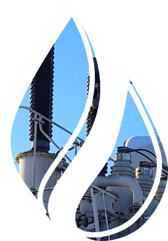

Комплектные трансформаторные подстанции различного типа
На главную страницуИзучите материал о комплектных трансформаторных подстанциях различного типа. Чтобы перейти к учебному материалу, кликайте на блоки с текстом
Список рекомендованной литературы

- Сибикин, Ю. Д. Электроснабжение промышленных и гражданских зданий: учебник / Ю.Д. Сибикин. — 5-е изд., перераб. и доп. — Москва: ИНФРА-М, 2021. — 405 с. — (Среднее профессиональное образование). - ISBN 978-5-16-013093-4. — Текст: электронный. — URL: https://znanium.com/catalog/product/1224482
- Сивков, А. А. Основы электроснабжения: учебное пособие для среднего профессионального образования / А. А. Сивков, А. С. Сайгаш, Д. Ю. Герасимов. — 2-е изд., испр. и доп. — Москва : Издательство Юрайт, 2021. — 173 с. — (Профессиональное образование). — ISBN 978-5-534-01344-3. — Текст электронный // Образовательная платформа Юрайт [сайт]. — URL: https://urait.ru/bcode/471032
- Щербаков, Е. Ф. Электроснабжение и электропотребление на предприятиях: учебное пособие / Е.Ф. Щербаков, Д.С. Александров, А.Л. Дубов. — 2-е изд., перераб. и доп. — Москва: ФОРУМ: ИНФРА-М, 2020. — 495 с. — (Среднее профессиональное образование). — ISBN 978-5-00091-650-6. — Текст: электронный. — URL: https://znanium.com/catalog/product/1058248
- Хорольский, В. Я. Эксплуатация систем электроснабжения: учебное пособие / В.Я. Хорольский, М.А. Таранов. — Москва: ИНФРА-М, 2021. — 288 с. — (Среднее профессиональное образование). — ISBN 978-5-16-014458-0. — Текст: электронный. - URL: https://znanium.com/catalog/product/1372885